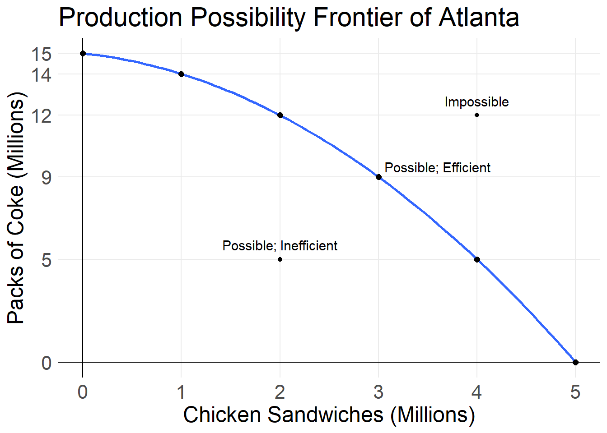
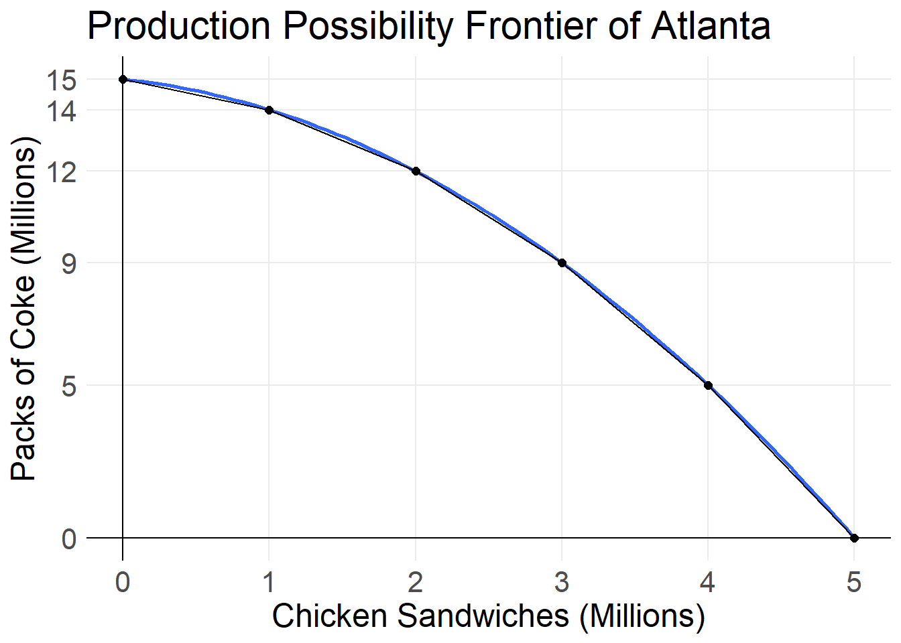
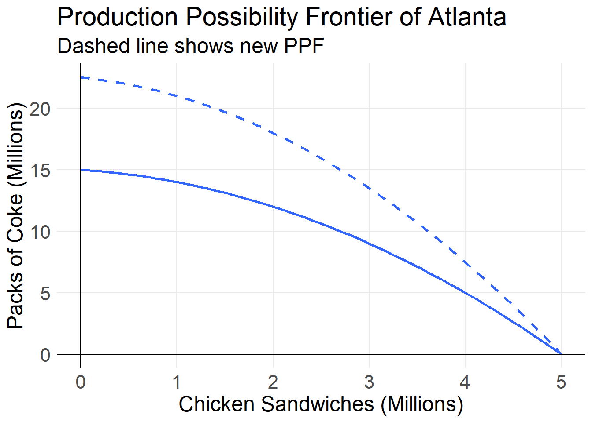
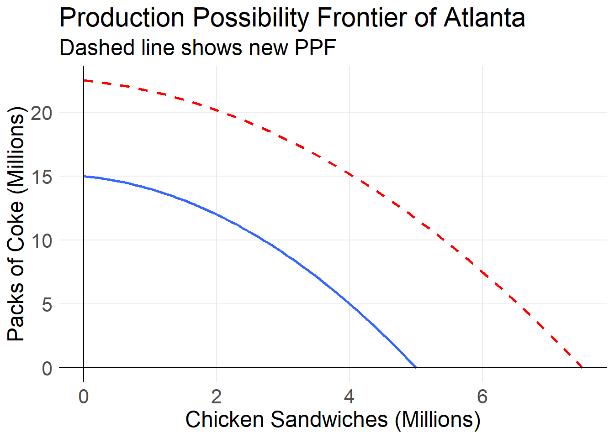
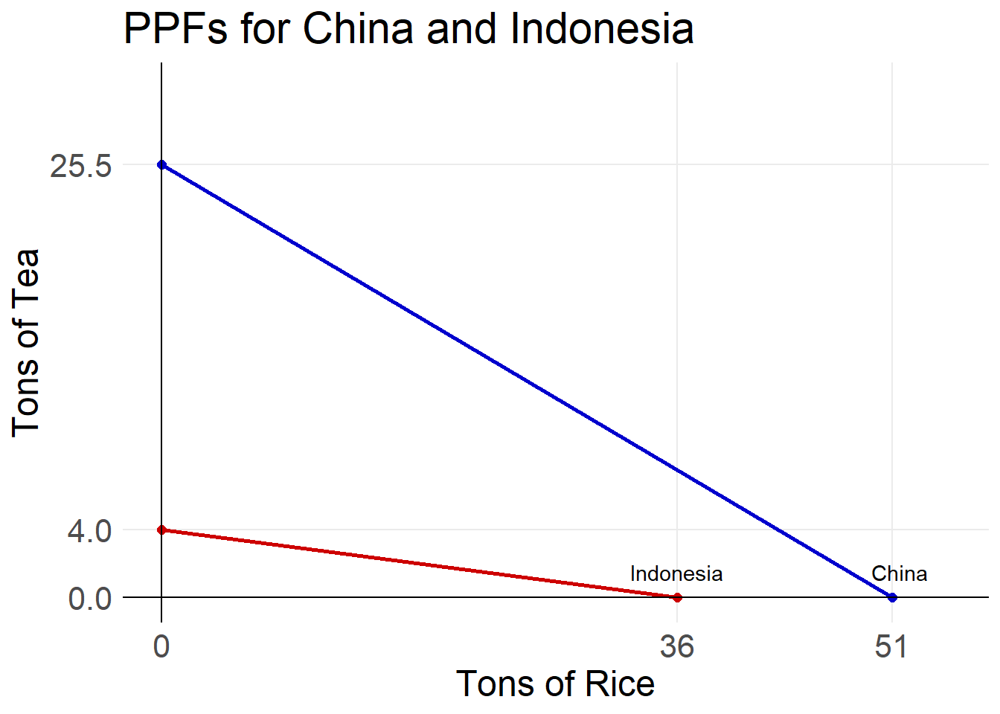
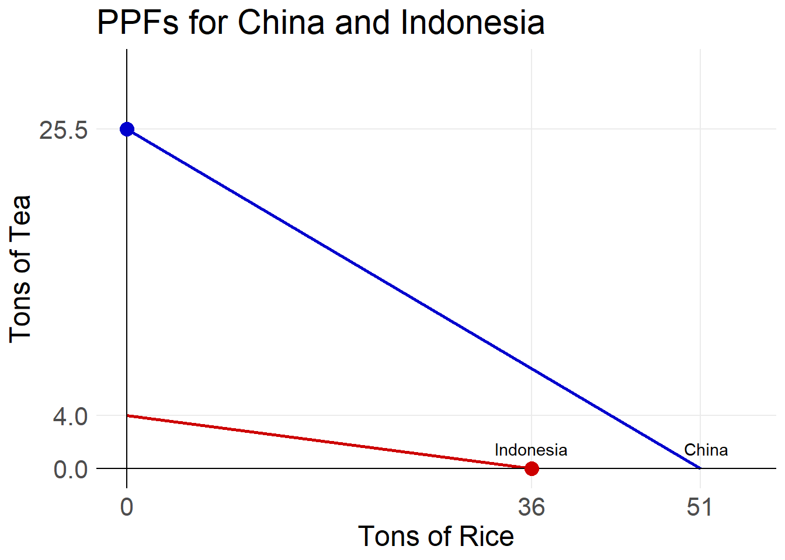
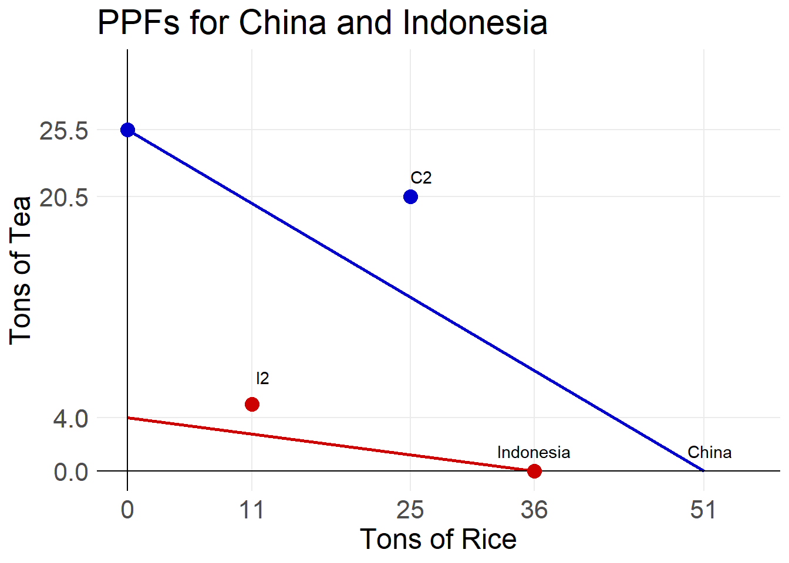
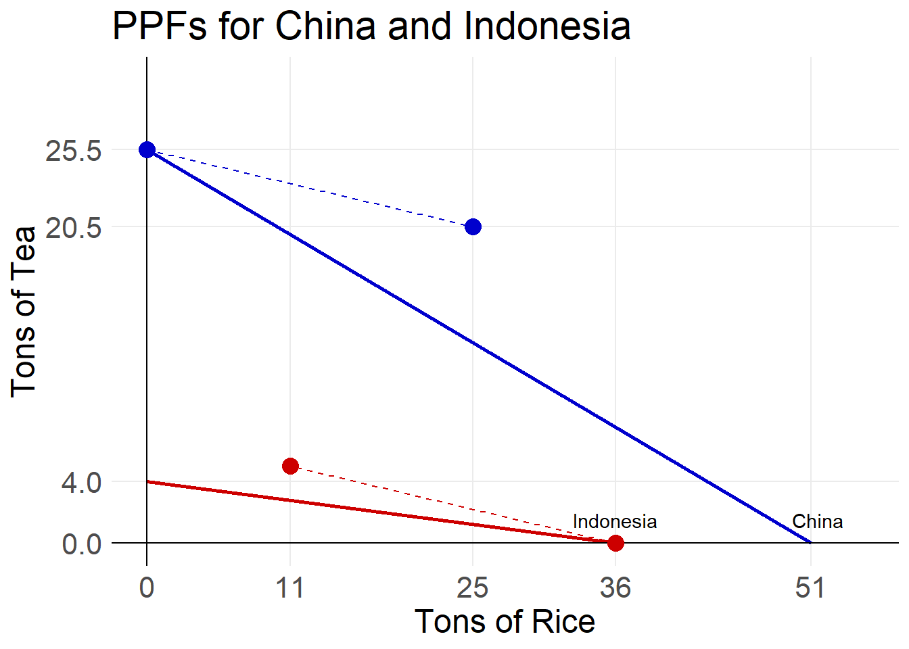

Chapter 2 Opportunity Costs
2.1 Production Possibility Frontiers
Suppose you have 5 hours of free time tonight. You can choose to either study economics or watch tv. How many hours do you choose to spend watching tv? How many hours to you choose to spend studying economics? How might this choice change if it is a Saturday? What if you have an exam tomorrow? What if it is spring break?
All the different possible ways for you to split your 5 hours between studying and watching tv makes up your production possibility frontier.
| Hours Studying | Hours Watching TV |
|---|---|
| 0 | 5 |
| 1 | 4 |
| 2 | 3 |
| 3 | 2 |
| 4 | 1 |
| 5 | 0 |
In an economic sense, the production possibility frontier (PPF) is the boundary between those combinations of goods and services that can be produced given current technology, and those that cannot.
For your choice between studying economics and watching tv, your PPF would look like this.

For most firms and governments, the production possibility is non-linear, or curved. This is because of something called specialization. Specialization is when people, business, or countries choose to only produce the goods and services which they have the lowest opportunity cost of producing.
For this example let us suppose that the city of Atlanta can produce either Chick-fil-A sandwiches of packs of Coca-Cola. Some of the possible production points are in the table below.
| Chicken Sandwiches (in Millions) | Packs of Coke (in Millions) |
|---|---|
| 0 | 15 |
| 1 | 14 |
| 2 | 12 |
| 3 | 9 |
| 4 | 5 |
| 5 | 0 |
We can plot these points on a graph to visualize the production possibility frontier.

Depending on the combination of goods Atlanta wants to produce we can state if it is possible or impossible, and if it is efficient or inefficient.
A point of production is possible if the combination of goods can be produced under current technological and resource constraints. A point is impossible if it cannot currently be produced. A point is inefficient, if it can be improved, without having to give up anything. A point is efficient if it cannot be improved on.
In the graph below, various points are labeled to show this concept. The point floating above the PPF is labeled as impossible. Any point that is above the PPF will be impossible. All points that are either on or below the the PPF are possible. Looking at the possible points, we can see that the point below the PPF is labeled as inefficient. This is because we are currently producing 2 million chicken sandwiches and 5 million packs of Coke. We could increase production of chicken sandwiches to 3 million, while continuing to produce 5 million cokes, thus make the point inefficient. The point on the PPF is labeled as efficient. This is because in order to increase production of chicken sandwiches, we would have to lower production of Coke.

2.2 Opportunity and Marginal Costs
Suppose we currently only produce Coca-Cola in Atlanta and produced 15 million packs of Coke per year, what would we have to give up in order to produce chicken sandwiches? We would give up packs of Coke. The cost of coke given up divided by the benefit of chicken sandwiches gained, gives us our opportunity cost. The cost of coke given up to produce one more chicken sandwich is the marginal cost.
In order to go from no chicken sandwich production to 1 million chicken sandwiches we must give up 1 million packs of Coke. So the opportunity (and marginal) cost is 1/1 = 1. The table below shows how to calculate the opportunity costs as we increase chicken sandwich production.
| Number of Sandwiches | Number of Cokes | Midpoint of Sandwiches | Opportunity Cost |
|---|---|---|---|
| 0 | 15 | ||
| \(\frac{0+1}{2}\) \(= \frac{1}{2}\) \(= 0.5\) | \(\frac{1}{1} = 1\) | ||
| 1 | 14 | ||
| \(\frac{1+2}{2}\) \(= \frac{3}{2}\) \(= 1.5\) | \(\frac{2}{1} = 2\) | ||
| 2 | 12 | ||
| \(\frac{2+3}{2}\) \(= \frac{5}{2}\) \(= 2.5\) | \(\frac{3}{1} = 3\) | ||
| 3 | 9 | ||
| \(\frac{3+4}{2}\) \(= \frac{7}{2}\) \(= 3.5\) | \(\frac{4}{1} = 4\) | ||
| 4 | 5 | ||
| \(\frac{4+5}{2}\) \(= \frac{9}{2}\) \(= 4.5\) | \(\frac{5}{1} = 5\) | ||
| 5 | 0 |
Notice the column “Midpoint of Sandwiches”. Because the PPF is curved, the slope between 1 and 2 chicken sandwiches is not staying the same the whole time. This also means that the opportunity cost between these two points is not constant, but rather is also changing. Instead, the opportunity cost that we calculated is the opportunity cost between 1 and 2 million chicken sandwiches. So we know that the opportunity cost halfway between 1 and 2 million sandwiches (the midpoint) is 2 packs of coke.
Midpoint Formula = (sum of two points)/2

2.2.1 Increasing Opportunity Costs
Looking at both the PPF and the table of opportunity costs, we can see that as the production of chicken sandwiches increases, the production of Coke must decrease by a larger amount each time. This shows the principle of increasing opportunity cost.
Why is increasing opportunity costs a thing? Why aren’t production possibility frontiers linear? Simply put, because some resources are better utilized for producing Coke than Chick-fil-A sandwiches. Let us think about a city of Atlanta that only produces Coca-Cola. This means that all workers, trucks, and land is being utilized for Coke production. Now consider what needs to happen to produce the first 1 million chicken sandwiches. We will need some land for the restaurants, we will need workers, and we will need trucks for inventory distribution. It would likely be that the workers that initially move to Chick-fil-A are better suited for the restaurant industry. They may be good at cooking or prefer to work with people. We can also produce chicken sandwiches in smaller kitchens meaning that we do not need large factory spaces or distribution centers. Ultimately, the industries are quite different from one another, so the initial impact to Coca-Cola is quite small.
As we increase production of chicken sandwiches and reduce production of Coke, more people and resources that are better suited to work at Coca Cola will end up having to be used for Chick-fil-A sandwiches. At this point, you have to more much more resources and people to have the same increases, because they are not as well suited for their new task.
2.3 Increasing Prouction Possibilities
Because technology, the number of people working, and even the number of building and factories are increasing, the production possibility frontier can also increase.
Suppose that Coca-Cola comes out with a new canning process that allows them to make packs of Coke much faster than before. This will increase the total combination of both Coke and Sandwiches that can be produced. However, since this does not change the production of chicken sandwiches, the maximum if we only produced chicken sandwiches is still 5 million as seen in the graph below.

Now let us suppose that at the same time, Chick-fil-A expanded the number of stores in the city. This would allow them to produce and serve more chicken sandwiches. This would shift the production possibility frontier out for both products.

2.4 Gains from Trade
2.4.1 Production Advantages
Let us look at the countries of China and Indonesia. Both countries are large producers of rice and tea. Currently China is the 2nd largest producer of rice and the largest producer of tea. Indonesia is the world’s 4th largest producer of rice and 7th largest producer of tea. Let us assume that their production possibilities are as given below:
| Rice in tons | Tea in tons |
|---|---|
| 0 | 25.5 |
| 51 | 0 |
| Rice in tons | Tea in Tons |
|---|---|
| 0 | 4 |
| 36 | 0 |
Plotting each countries production possibility frontiers looks like this.

We can quickly see that if both countries were to only produce rice, that China would produce more than Indonesia. This means that China has an absolute advantage in rice production. Similarly, China has the absolute advantage in tea production, because if both countries put all of their resources into tea, China would produce more?
So why would China be interested in trading with Indonesia, if they are better at producing both goods? Because of opportunity cost.
A country, person, or business has the comparative advantage in producing a good or service if they are able to produce it at the lowest opportunity cost.
What is the opportunity cost of growing rice?
In order for China to grow rice, it must produce less tea. Their opportunity cost is \(\frac{25.5}{51} = 0.5\). China must give up 0.5 tons of tea in order to grow 1 ton of rice. Similarly, Indonesia’s opportunity cost is \(\frac{4}{39} \approx 0.11\). Because Indonesia’s opportunity cost of growing rice is less than China’s, Indonesia has the comparative advantage.
What is the opportunity cost of growing tea?
In order for China to grow tea, they must grow less rice. China’s opportunity cost of growing tea is \(\frac{51}{25.5} = 2\). Indonesia’s opportunity cost is \(\frac{36}{4} = 9\). So, China has the lowest opportunity cost and the comparative advantage in tea production.
2.4.2 Specialization
Most countries of the world do not produce every single good and service possible, but rather produce some and then trade for the rest with other countries. They choose to produce the goods and services for which they have the comparative advantage. The act of only producing those goods and services for which a country or firm has the comparative advantage is called specialization. In our scenario, China should specialize in tea. This means China makes 25.5 tons of tea and 0 tons of rice. Indonesia should specialize in rice making 0 tons of tea and 36 tons of rice.
Graphically, we can see their production points. China produces at the large point on the China PPF, and Indonesia produces at the large point on the Indonesia PPF.

2.4.3 Trade
Once countries have specialized, they trade with countries that have other specialties.
Because China must give up 0.5 a ton of tea to grow rice, they are willing to purchase rice from others if the price is less than 0.5 tons of tea. If the price is higher then they will just produce it themselves.
Similarly, Indonesia’s opportunity cost of growing rice is 0.11. If they can sell for a price greater than this, they will.
This disparity in opportunity costs is what makes trade advantageous for both countries even though China has the absolute advantage in production. Suppose that China agrees to purchase 25 tons of rice from Indonesia at a price of 0.2 tons of tea per ton of rice. This means that China will give Indonesia 25*0.2 = 5 tons of tea.
China will end with 25.5 - 5 = 20.5 tons of tea and 0 + 25 = 25 tons of rice.
Indonesia will end with 0 + 5 = 5 tons of tea and 36 - 25 = 11 tons of rice.
Plotting these points shows us more clearly how both countries end up better off from trade. The amounts of rice and tea for China after trade is seen at point C2, and for Indonesia at point I2.

By connecting the points before and after trade for each country, we get their trade line. The trade line shows us the different combinations that the countries could land at after trading different quantities.

2.4.4 Unattainable Individually but Efficient Globally
Through trade, China and Indonesia are able to reach points beyond their PPF’s. Alone these points would be unattainable. Through trade, the combined production of all countries allows us to reach efficient production on the economic (or global) PPF.